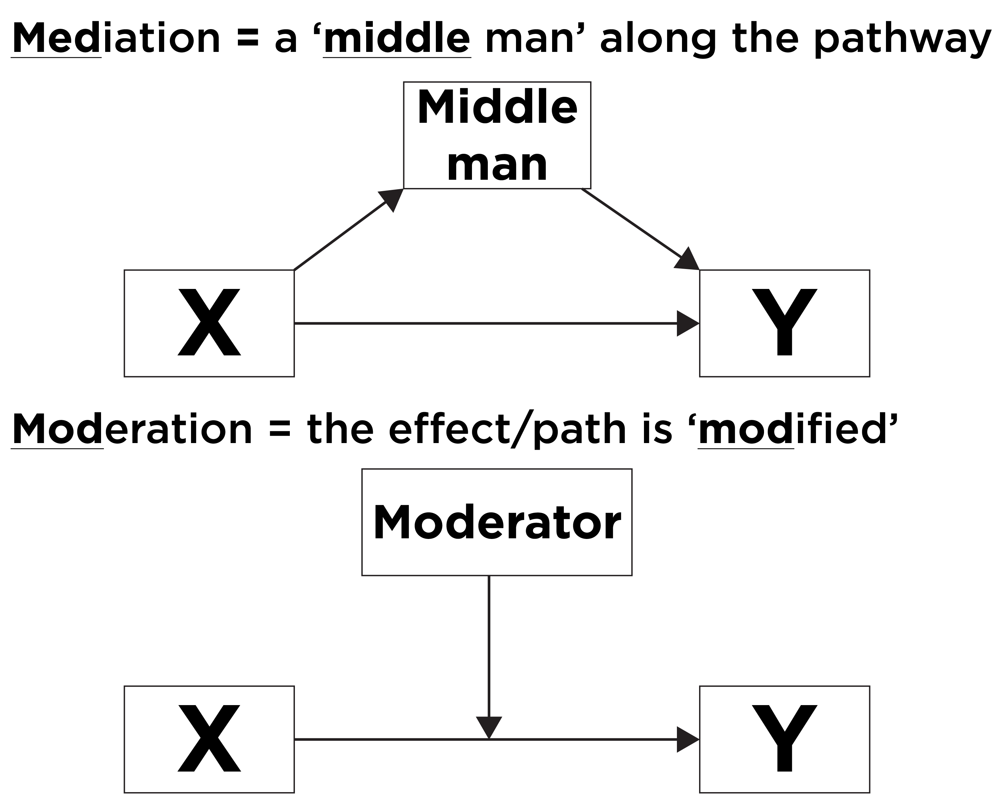

Overview
The purpose of this page is to briefly clarify the difference between
interaction (also called “moderation”) and mediation hypotheses. Both
types of effects involve three variables:
- An independent/predictor variable, which will be labeled as
X.
- A dependent/outcome variable, which will be labeled as
Y.
- The mediator or interaction (“moderator”) variable, which will be
labeled as
M.

Mediation Versus Moderation Mnemonic
Interaction
An interaction (sometimes called “moderation”), on
the other hand, occurs when there is a variable or condition
(M; called a “moderator”) that changes the
relationship between X and Y. That is, the
effect of the predictor variable on the outcome variable differs at
different levels of the moderator variable. In these cases,
X and M work together to have an effect
on Y; here X does not have a direct
effect on M. Interaction answers the question of,
“For whom does X influence
Y?” If X influences Y more
strongly for some people or in some circumstances, we would say that
there is an interaction such that the effect of X on
Y depends on M, as depicted below:
For example, if the effect of time passing on words recalled differs
for those with and without an Alzheimer’s diagnosis, the interaction
could be depicted below:
Types of
Interactions
There are two types of interaction effects: cross-over interactions
and fan-shaped interactions. Graphically, both types of interaction
effects can be identified by the appearance of non-parallel
lines. However, the way these lines diverge from one another are
what define whether it is a cross-over or fan-shaped interaction.
Cross-Over
Interaction
A cross-over interaction occurs when individuals at
different levels of M start at different points on
Y, and when interacting with X the effects on
Y go in different directions; when looking at a graph of
the effects, you can see the lines “cross-over.” A visual representation
of this kind of interaction can be displayed in a line graph with two
groups:

Cross-over Interaction
Where the predictor/independent variable X is on the
x-axis, the outcome/dependent variable Y is on the y-axis,
and the different levels/groups of the moderator variable M
are represented by the different colored lines in the graph (i.e., the
z-axis). An interaction can be identified visually by non-parallel
lines at different levels of the moderator.
Fan-Shaped
Interaction
Fan-shaped interactions occur when individuals at
different levels of M either start or end near each other
on Y, but appear to diverge at different levels of
X. For example: there may be an interaction between the
presence of Alzheimer’s disease and time when trying to predict an
individual’s verbal memory. Imagine a task where a list of words is
repeatedly read to an individual. After completing the task, they are
asked to recall as many of those words as possible at various periods of
time (e.g., at 5-minute intervals). At first, early on in the assessment
(i.e., after the first 5 minutes) the number of words recalled by
individuals in both groups (i.e., at different levels of M)
may not significantly differ from one another; individuals with and
without Alzheimer’s disease appear to recall the same amount of words.
However, as more time passes, the interaction effect between time and
the presence of the disease becomes more apparent. That is, at later
time points (i.e., after 20 minutes) the gap between the amount of words
recalled by both groups become significantly different. In this case, we
can say that the presence of Alzheimer’s disease interacts with the
passing of time to cause a faster decline in the number of words
recalled. In other words, the number of words recalled over time differs
between individuals who have Alzheimer’s versus individuals who do
not.
Visually, this can be displayed in a line graph with two groups:

Fan-Shaped Interaction
In the above example, there is a stronger association between the
passage of time and number of words recalled for the Alzheimer’s
diagnosis group compared to those without Alzheimer’s. For the
Alzheimer’s diagnosis group, there is a strong negative
association between the passage of time and number of words recalled.
For those without Alzheimer’s, there is a weak negative
association between the passage of time and number of words recalled.
That is, the effect of the passage of time on number of words
recalled depends on whether the person has Alzheimer’s. In terms of
the number of words recalled, the passage of time matters more
for those with Alzheimer’s compared to those without Alzheimer’s.
Question: For whom does the passage of time lead to fewer
words recalled?
Answer: those with Alzheimer’s
LS0tCnRpdGxlOiAiTWVkaWF0aW9uIHZlcnN1cyBJbnRlcmFjdGlvbiIKLS0tCgpgYGB7ciBzZXR1cCwgaW5jbHVkZSA9IEZBTFNFfQprbml0cjo6b3B0c19jaHVuayRzZXQoCiAgZWNobyA9IFRSVUUsCiAgZXJyb3IgPSBUUlVFLAogIGNvbW1lbnQgPSAiIikKYGBgCgojIE92ZXJ2aWV3CgpUaGUgcHVycG9zZSBvZiB0aGlzIHBhZ2UgaXMgdG8gYnJpZWZseSBjbGFyaWZ5IHRoZSBkaWZmZXJlbmNlIGJldHdlZW4gaW50ZXJhY3Rpb24gKGFsc28gY2FsbGVkICJtb2RlcmF0aW9uIikgYW5kIG1lZGlhdGlvbiBoeXBvdGhlc2VzLgpCb3RoIHR5cGVzIG9mIGVmZmVjdHMgaW52b2x2ZSB0aHJlZSB2YXJpYWJsZXM6CgoxLiBBbiBpbmRlcGVuZGVudC9wcmVkaWN0b3IgdmFyaWFibGUsIHdoaWNoIHdpbGwgYmUgbGFiZWxlZCBhcyBgWGAuCjEuIEEgZGVwZW5kZW50L291dGNvbWUgdmFyaWFibGUsIHdoaWNoIHdpbGwgYmUgbGFiZWxlZCBhcyBgWWAuCjEuIFRoZSBtZWRpYXRvciBvciBpbnRlcmFjdGlvbiAoIm1vZGVyYXRvciIpIHZhcmlhYmxlLCB3aGljaCB3aWxsIGJlIGxhYmVsZWQgYXMgYE1gLgoKIVtNZWRpYXRpb24gVmVyc3VzIE1vZGVyYXRpb24gTW5lbW9uaWNdKGltYWdlcy9tZWRpYXRpb25Nb2RlcmF0aW9uTW5lbW9uaWMucG5nKQoKIyBNZWRpYXRpb24KCioqTWVkaWF0aW9uKiogaXMgYSA8dT5jYXVzYWwgY2hhaW4gb2YgZXZlbnRzPC91Piwgd2hlcmUgb25lIHZhcmlhYmxlIChhIG1lZGlhdG9yIHZhcmlhYmxlKSBhdCBsZWFzdCBwYXJ0aWFsbHkgPHU+ZXhwbGFpbnMgKG9yIGFjY291bnRzIGZvcikgdGhlIHJlbGF0aW9uc2hpcCBiZXR3ZWVuIHR3byBvdGhlciB2YXJpYWJsZXM8L3U+ICh0aGUgcHJlZGljdG9yIHZhcmlhYmxlIGFuZCB0aGUgb3V0Y29tZSB2YXJpYWJsZSkuCkluIG1lZGlhdGlvbiwgYSBwcmVkaWN0b3IgKGBYYCkgbGVhZHMgdG8gYSBtZWRpYXRvciAoYE1gKSwgd2hpY2ggbGVhZHMgdG8gYW4gb3V0Y29tZSAoYFlgKS4KTWVkaWF0aW9uIGFuc3dlcnMgdGhlIHF1ZXN0aW9uIG9mLCAiPHU+KipXaHkgKG9yIGhvdykqKiBkb2VzIGBYYCBpbmZsdWVuY2UgYFlgPzwvdT4gQSA8dT5tZWRpYXRvcjwvdT4gKGBNYCkgaXMgYSB2YXJpYWJsZSB0aGF0IGhlbHBzIGV4cGxhaW4gdGhlIHJlbGF0aW9uc2hpcCBiZXR3ZWVuIHR3byBvdGhlciB2YXJpYWJsZXMsIGFuZCBpdCBhbnN3ZXJzIHRoZSBxdWVzdGlvbiBvZiB3aHkvaG93IGBYYCBpbmZsdWVuY2VzIGBZYC4KVGhhdCBpcywgdGhlIG1lZGlhdG9yIGlzIHRoZSB2YXJpYWJsZSB0aGF0IGhlbHBzIGV4cGxhaW4gaG93L3doeSBgWGAgaXMgcmVsYXRlZCB0byBgWWAuCkluIG90aGVyIHdvcmRzLCB5b3UgY2FuIHRoaW5rIG9mIHRoZSBtZWRpYXRvciBhcyB0aGUgPHU+bWVjaGFuaXNtPC91PiB0aGF0IGhlbHBzIGV4cGxhaW4gd2h5IGBYYCBoYXMgYW4gaW1wYWN0IG9uIGBZYC4KVGhlIGFzc29jaWF0aW9uIGJldHdlZW4gYFhgIGFuZCBgWWAgPHU+Z2V0cyBzbWFsbGVyPC91PiB3aGVuIGFjY291bnRpbmcgZm9yIGBNYC4KVmlzdWFsbHkgdGhpcyBjYW4gYmUgd3JpdHRlbiBhczoKCiFbTWVkaWF0aW9uXShpbWFnZXMvbWVkaWF0aW9uLnBuZykKCldoZXJlIGBYYCBpcyBjYXVzaW5nIGBNYCwgd2hpY2ggaW4gdHVybiBpcyBjYXVzaW5nIGBZYC4KSW4gb3RoZXIgd29yZHMsIGBYYCBsZWFkcyB0byBgTWAsIGFuZCBgTWAgbGVhZHMgdG8gYFlgLgpJbiBjbGluaWNhbCBwc3ljaG9sb2d5LCB3ZSBvZnRlbiBleGFtaW5lIG1lZGlhdGlvbiB3aGVuIHdlIGludmVzdGlnYXRlIHdoeSBjZXJ0YWluIHRoZXJhcGllcyBjYXVzZSByZWR1Y3Rpb25zIGluIHBzeWNob3BhdGhvbG9neSBsaWtlIGRlcHJlc3Npb24uClRoYXQgaXMsIHdoYXQgaXMgdGhlIG1lY2hhbmlzbSBvZiBhIHRoZXJhcGV1dGljIHRlY2huaXF1ZSA8dT50aGF0IGhlbHBzPC91PiB0byByZWR1Y2UgZGVwcmVzc2lvbj8gT25lIGNhbiBoeXBvdGhlc2l6ZSB0aGF0IHNvbWUgdGhlcmFwaWVzIGhlbHAgaW5jcmVhc2UgYSBjbGllbnQncyBzZWxmLWVzdGVlbSwgd2hpY2ggaW4gdHVybiB3aWxsIGhlbHAgdG8gcmVkdWNlIHRoZSBjbGllbnQncyBkZXByZXNzaW9uLgpJbiB0aGlzIGNhc2UsIGluY3JlYXNlZCBzZWxmLWVzdGVlbSA8dT5tZWRpYXRlczwvdT4gKGkuZS4sIGhlbHBzIGV4cGxhaW4gb3IgYWNjb3VudCBmb3IpIHRoZSBlZmZlY3Qgb2YgdGhlIHRoZXJhcHkgb24gZGVjcmVhc2VkIGRlcHJlc3Npb24uCgpRdWVzdGlvbjogPHU+V2h5L2hvdzwvdT4gZG9lcyB0aGUgdGhlcmFwZXV0aWMgdGVjaG5pcXVlIGxlYWQgY2xpZW50cyB0byBleHBlcmllbmNlIGZld2VyIGRlcHJlc3NpdmUgc3ltcHRvbXM/XApBbnN3ZXI6IGluY3JlYXNlZCBzZWxmLWVzdGVlbQoKQXMgYSBwaWN0dXJlLCB3ZSBjYW4gZHJhdyB0aGlzIHJlbGF0aW9uc2hpcCBhczoKCiFbTWVkaWF0aW9uIEV4YW1wbGVdKGltYWdlcy9tZWRpYXRpb25FeGFtcGxlLnBuZykKCiMgSW50ZXJhY3Rpb24KIApBbiAqKmludGVyYWN0aW9uKiogKHNvbWV0aW1lcyBjYWxsZWQgIm1vZGVyYXRpb24iKSwgb24gdGhlIG90aGVyIGhhbmQsIG9jY3VycyB3aGVuIHRoZXJlIGlzIGEgdmFyaWFibGUgb3IgY29uZGl0aW9uIChgTWA7IGNhbGxlZCBhICJtb2RlcmF0b3IiKSB0aGF0IDx1PmNoYW5nZXMgdGhlIHJlbGF0aW9uc2hpcDwvdT4gYmV0d2VlbiBgWGAgYW5kIGBZYC4KVGhhdCBpcywgdGhlIGVmZmVjdCBvZiB0aGUgcHJlZGljdG9yIHZhcmlhYmxlIG9uIHRoZSBvdXRjb21lIHZhcmlhYmxlIGRpZmZlcnMgYXQgZGlmZmVyZW50IGxldmVscyBvZiB0aGUgbW9kZXJhdG9yIHZhcmlhYmxlLgpJbiB0aGVzZSBjYXNlcywgYFhgIGFuZCBgTWAgPHU+d29yayB0b2dldGhlcjwvdT4gdG8gaGF2ZSBhbiBlZmZlY3Qgb24gYFlgOyBoZXJlIGBYYCA8dT5kb2VzIG5vdCBoYXZlIGEgZGlyZWN0IGVmZmVjdDwvdT4gb24gYE1gLgpJbnRlcmFjdGlvbiBhbnN3ZXJzIHRoZSBxdWVzdGlvbiBvZiwgIjx1PioqRm9yIHdob20qKiBkb2VzIGBYYCBpbmZsdWVuY2UgYFlgPzwvdT4iCklmIGBYYCBpbmZsdWVuY2VzIGBZYCBtb3JlIHN0cm9uZ2x5IGZvciBzb21lIHBlb3BsZSBvciBpbiBzb21lIGNpcmN1bXN0YW5jZXMsIHdlIHdvdWxkIHNheSB0aGF0IHRoZXJlIGlzIGFuIGludGVyYWN0aW9uIHN1Y2ggdGhhdCB0aGUgPHU+ZWZmZWN0IG9mIGBYYCBvbiBgWWAgZGVwZW5kcyBvbiBgTWA8L3U+LCBhcyBkZXBpY3RlZCBiZWxvdzoKCiFbTW9kZXJhdGlvbl0oaW1hZ2VzL21vZGVyYXRpb24ucG5nKQoKRm9yIGV4YW1wbGUsIGlmIHRoZSBlZmZlY3Qgb2YgdGltZSBwYXNzaW5nIG9uIHdvcmRzIHJlY2FsbGVkIGRpZmZlcnMgZm9yIHRob3NlIHdpdGggYW5kIHdpdGhvdXQgYW4gQWx6aGVpbWVyJ3MgZGlhZ25vc2lzLCB0aGUgaW50ZXJhY3Rpb24gY291bGQgYmUgZGVwaWN0ZWQgYmVsb3c6CgohW01vZGVyYXRpb25dKGltYWdlcy9tb2RlcmF0aW9uRXhhbXBsZS5wbmcpCgojIyBUeXBlcyBvZiBJbnRlcmFjdGlvbnMKClRoZXJlIGFyZSB0d28gdHlwZXMgb2YgaW50ZXJhY3Rpb24gZWZmZWN0czogY3Jvc3Mtb3ZlciBpbnRlcmFjdGlvbnMgYW5kIGZhbi1zaGFwZWQgaW50ZXJhY3Rpb25zLgpHcmFwaGljYWxseSwgYm90aCB0eXBlcyBvZiBpbnRlcmFjdGlvbiBlZmZlY3RzIGNhbiBiZSBpZGVudGlmaWVkIGJ5IHRoZSBhcHBlYXJhbmNlIG9mIDx1Pm5vbi1wYXJhbGxlbCBsaW5lczwvdT4uCkhvd2V2ZXIsIHRoZSB3YXkgdGhlc2UgbGluZXMgZGl2ZXJnZSBmcm9tIG9uZSBhbm90aGVyIGFyZSB3aGF0IGRlZmluZSB3aGV0aGVyIGl0IGlzIGEgY3Jvc3Mtb3ZlciBvciBmYW4tc2hhcGVkIGludGVyYWN0aW9uLgoKIyMjIENyb3NzLU92ZXIgSW50ZXJhY3Rpb24KCkEgKipjcm9zcy1vdmVyIGludGVyYWN0aW9uKiogb2NjdXJzIHdoZW4gaW5kaXZpZHVhbHMgYXQgZGlmZmVyZW50IGxldmVscyBvZiBgTWAgc3RhcnQgYXQgZGlmZmVyZW50IHBvaW50cyBvbiBgWWAsIGFuZCB3aGVuIGludGVyYWN0aW5nIHdpdGggYFhgIHRoZSBlZmZlY3RzIG9uIGBZYCBnbyBpbiBkaWZmZXJlbnQgZGlyZWN0aW9uczsgd2hlbiBsb29raW5nIGF0IGEgZ3JhcGggb2YgdGhlIGVmZmVjdHMsIHlvdSBjYW4gc2VlIHRoZSBsaW5lcyAiY3Jvc3Mtb3Zlci4iCkEgdmlzdWFsIHJlcHJlc2VudGF0aW9uIG9mIHRoaXMga2luZCBvZiBpbnRlcmFjdGlvbiBjYW4gYmUgZGlzcGxheWVkIGluIGEgbGluZSBncmFwaCB3aXRoIHR3byBncm91cHM6CgohW0Nyb3NzLW92ZXIgSW50ZXJhY3Rpb25dKGltYWdlcy9pbnRlcmFjdGlvbkNyb3Nzb3Zlci5wbmcpCgpXaGVyZSB0aGUgcHJlZGljdG9yL2luZGVwZW5kZW50IHZhcmlhYmxlIGBYYCBpcyBvbiB0aGUgeC1heGlzLCB0aGUgb3V0Y29tZS9kZXBlbmRlbnQgdmFyaWFibGUgYFlgIGlzIG9uIHRoZSB5LWF4aXMsIGFuZCB0aGUgZGlmZmVyZW50IGxldmVscy9ncm91cHMgb2YgdGhlIG1vZGVyYXRvciB2YXJpYWJsZSBgTWAgYXJlIHJlcHJlc2VudGVkIGJ5IHRoZSBkaWZmZXJlbnQgY29sb3JlZCBsaW5lcyBpbiB0aGUgZ3JhcGggKGkuZS4sIHRoZSB6LWF4aXMpLgpBbiBpbnRlcmFjdGlvbiBjYW4gYmUgaWRlbnRpZmllZCB2aXN1YWxseSBieSA8dT5ub24tcGFyYWxsZWwgbGluZXM8L3U+IGF0IGRpZmZlcmVudCBsZXZlbHMgb2YgdGhlIG1vZGVyYXRvci4KCiMjIyBGYW4tU2hhcGVkIEludGVyYWN0aW9uCgoqKkZhbi1zaGFwZWQgaW50ZXJhY3Rpb25zKiogb2NjdXIgd2hlbiBpbmRpdmlkdWFscyBhdCBkaWZmZXJlbnQgbGV2ZWxzIG9mIGBNYCBlaXRoZXIgc3RhcnQgb3IgZW5kIG5lYXIgZWFjaCBvdGhlciBvbiBgWWAsIGJ1dCBhcHBlYXIgdG8gZGl2ZXJnZSBhdCBkaWZmZXJlbnQgbGV2ZWxzIG9mIGBYYC4KRm9yIGV4YW1wbGU6IHRoZXJlIG1heSBiZSBhbiBpbnRlcmFjdGlvbiBiZXR3ZWVuIHRoZSBwcmVzZW5jZSBvZiBBbHpoZWltZXIncyBkaXNlYXNlIGFuZCB0aW1lIHdoZW4gdHJ5aW5nIHRvIHByZWRpY3QgYW4gaW5kaXZpZHVhbCdzIHZlcmJhbCBtZW1vcnkuCkltYWdpbmUgYSB0YXNrIHdoZXJlIGEgbGlzdCBvZiB3b3JkcyBpcyByZXBlYXRlZGx5IHJlYWQgdG8gYW4gaW5kaXZpZHVhbC4KQWZ0ZXIgY29tcGxldGluZyB0aGUgdGFzaywgdGhleSBhcmUgYXNrZWQgdG8gcmVjYWxsIGFzIG1hbnkgb2YgdGhvc2Ugd29yZHMgYXMgcG9zc2libGUgYXQgdmFyaW91cyBwZXJpb2RzIG9mIHRpbWUgKGUuZy4sIGF0IDUtbWludXRlIGludGVydmFscykuCkF0IGZpcnN0LCBlYXJseSBvbiBpbiB0aGUgYXNzZXNzbWVudCAoaS5lLiwgYWZ0ZXIgdGhlIGZpcnN0IDUgbWludXRlcykgdGhlIG51bWJlciBvZiB3b3JkcyByZWNhbGxlZCBieSBpbmRpdmlkdWFscyBpbiBib3RoIGdyb3VwcyAoaS5lLiwgYXQgZGlmZmVyZW50IGxldmVscyBvZiBgTWApIG1heSBub3Qgc2lnbmlmaWNhbnRseSBkaWZmZXIgZnJvbSBvbmUgYW5vdGhlcjsgaW5kaXZpZHVhbHMgd2l0aCBhbmQgd2l0aG91dCBBbHpoZWltZXIncyBkaXNlYXNlIGFwcGVhciB0byByZWNhbGwgdGhlIHNhbWUgYW1vdW50IG9mIHdvcmRzLgpIb3dldmVyLCBhcyBtb3JlIHRpbWUgcGFzc2VzLCB0aGUgaW50ZXJhY3Rpb24gZWZmZWN0IGJldHdlZW4gdGltZSBhbmQgdGhlIHByZXNlbmNlIG9mIHRoZSBkaXNlYXNlIGJlY29tZXMgbW9yZSBhcHBhcmVudC4KVGhhdCBpcywgYXQgbGF0ZXIgdGltZSBwb2ludHMgKGkuZS4sIGFmdGVyIDIwIG1pbnV0ZXMpIHRoZSBnYXAgYmV0d2VlbiB0aGUgYW1vdW50IG9mIHdvcmRzIHJlY2FsbGVkIGJ5IGJvdGggZ3JvdXBzIGJlY29tZSBzaWduaWZpY2FudGx5IGRpZmZlcmVudC4KSW4gdGhpcyBjYXNlLCB3ZSBjYW4gc2F5IHRoYXQgPHU+dGhlIHByZXNlbmNlIG9mIEFsemhlaW1lcidzIGRpc2Vhc2UgaW50ZXJhY3RzIHdpdGggdGhlIHBhc3Npbmcgb2YgdGltZTwvdT4gdG8gY2F1c2UgYSBmYXN0ZXIgZGVjbGluZSBpbiB0aGUgbnVtYmVyIG9mIHdvcmRzIHJlY2FsbGVkLgpJbiBvdGhlciB3b3JkcywgdGhlIG51bWJlciBvZiB3b3JkcyByZWNhbGxlZCBvdmVyIHRpbWUgZGlmZmVycyBiZXR3ZWVuIGluZGl2aWR1YWxzIHdobyBoYXZlIEFsemhlaW1lcidzIHZlcnN1cyBpbmRpdmlkdWFscyB3aG8gZG8gbm90LgoKVmlzdWFsbHksIHRoaXMgY2FuIGJlIGRpc3BsYXllZCBpbiBhIGxpbmUgZ3JhcGggd2l0aCB0d28gZ3JvdXBzOiAKCiAhW0Zhbi1TaGFwZWQgSW50ZXJhY3Rpb25dKGltYWdlcy9pbnRlcmFjdGlvbkZhblNoYXBlZC5wbmcpCgpJbiB0aGUgYWJvdmUgZXhhbXBsZSwgdGhlcmUgaXMgYSBzdHJvbmdlciBhc3NvY2lhdGlvbiBiZXR3ZWVuIHRoZSBwYXNzYWdlIG9mIHRpbWUgYW5kIG51bWJlciBvZiB3b3JkcyByZWNhbGxlZCBmb3IgdGhlIEFsemhlaW1lcidzIGRpYWdub3NpcyBncm91cCBjb21wYXJlZCB0byB0aG9zZSB3aXRob3V0IEFsemhlaW1lcidzLgpGb3IgdGhlIEFsemhlaW1lcidzIGRpYWdub3NpcyBncm91cCwgdGhlcmUgaXMgYSA8dT5zdHJvbmc8L3U+IG5lZ2F0aXZlIGFzc29jaWF0aW9uIGJldHdlZW4gdGhlIHBhc3NhZ2Ugb2YgdGltZSBhbmQgbnVtYmVyIG9mIHdvcmRzIHJlY2FsbGVkLgpGb3IgdGhvc2Ugd2l0aG91dCBBbHpoZWltZXIncywgdGhlcmUgaXMgYSA8dT53ZWFrPC91PiBuZWdhdGl2ZSBhc3NvY2lhdGlvbiBiZXR3ZWVuIHRoZSBwYXNzYWdlIG9mIHRpbWUgYW5kIG51bWJlciBvZiB3b3JkcyByZWNhbGxlZC4KVGhhdCBpcywgPHU+dGhlIGVmZmVjdCBvZiB0aGUgcGFzc2FnZSBvZiB0aW1lIG9uIG51bWJlciBvZiB3b3JkcyByZWNhbGxlZCBkZXBlbmRzIG9uIHdoZXRoZXIgdGhlIHBlcnNvbiBoYXMgQWx6aGVpbWVyJ3M8L3U+LgpJbiB0ZXJtcyBvZiB0aGUgbnVtYmVyIG9mIHdvcmRzIHJlY2FsbGVkLCB0aGUgcGFzc2FnZSBvZiB0aW1lIDx1Pm1hdHRlcnMgbW9yZTwvdT4gZm9yIHRob3NlIHdpdGggQWx6aGVpbWVyJ3MgY29tcGFyZWQgdG8gdGhvc2Ugd2l0aG91dCBBbHpoZWltZXIncy4KClF1ZXN0aW9uOiA8dT5Gb3Igd2hvbTwvdT4gZG9lcyB0aGUgcGFzc2FnZSBvZiB0aW1lIGxlYWQgdG8gZmV3ZXIgd29yZHMgcmVjYWxsZWQ/XApBbnN3ZXI6IHRob3NlIHdpdGggQWx6aGVpbWVyJ3MK